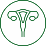

Гинекология
-
Тренинг интимных мышц Emsella

-
Аппаратная методика, предназначенная для проведения неинвазивной электромагнитной стимуляции мышц
тазового дна с целью реабилитации слабых мышц таза и восстановления нервно-мышечного контроля.
-
Плазмотерапия «Эндорет»
- Процедура введения богатой тромбоцитами плазмы (БоТП), полученной из
крови самого пациента, в зону, подлежащую лечению. Проводится под местной анестезией. Стимуляция
ауторегенерации с использованием богатой тромбоцитами плазмы предназначена для ускоренного полноценного
восстановления тканей организма.
-
Лазерная коррекция вульвы и влагалища
- Метод восстановления эстетики и структуры наружных женских половых
органов и влагалища. Процедура проводится с применением лазерного излучения, которое активизирует
естественные процессы регенерации. Эти процессы омолаживают орган, восстанавливают его функциональность
и возвращают эстетически привлекательный вид.
-
Введение препарата «Лаеннек»
-
Лаеннек – плацентарный препарат с уникальным полифункциональным и многокомпонентным составом, где каждый
компонент усиливает взаимное действие всех компонентов. Препарат содержит природные биостимуляторы,
витамины, факторы роста клеток, минералы, аминокислоты и сотни ферментов. Совокупность этих компонентов
вызывает неспецифические реакции омоложения организма. На клеточном уровне активизируются застойные
жизненные процессы, что устраняет имеющиеся патологии и препятствует возникновению новых.
Гармонизируются
структуры и системы тела, его функционирование возвращается к состоянию молодости.
-
Пластика филером
-
С помощью филлеров на основе гиалуроновой кислоты можно устранить старение и обвисание кожи. Филлерами
можно увеличить головку и карман клитора, вылечить сухость слизистой, увеличить большие половые губы и
точку G.
-
Спектральная фототерапия (СФТ) на проекцию органов
-
Метод доставки необходимых микроэлементов к пораженному органу с помощью мультиспектральной энергии
света
сочетает принципы фототерапии и рефлексотерапии. Обеспечивает адресную доставку микроэлементов через
биологически активные точки к органам и системам организма. Лечебный эффект достигается за счет
насыщения
организма определенными микро- и макроэлементами, которые участвуют во всех обменных процессах,
обеспечивая нормальное функционирование организма. Используется для восстановления работы всех органов и
систем.
-
Сеанс кинезиологических практик
- Лечение через движение, в основе которого лежит холистический
(комплексный) подход. Метод предполагает сочетание определенных движений, подобранных строго
индивидуально, на основе диагностической карты тела. Подобный комплекс направлен на стабилизацию одних
частей тела иммобилизацию других. Постепенное обучение правильным движениям приводит к
нейрорефлекторному восстановлению костно-мышечной системы, благодаря чему развивается способность
двигаться правильно и безопасно.
-
Консультации врачей-специалистов
-
Гинеколог, гинеколог-эндокринолог.
-
Гинекологический check-up
-
Программа комплексных обследований, направленных на раннее выявление заболеваний половой системы у
женщин. Рекомендовано: при наличии жалоб со стороны малого таза, нарушении менструального цикла,
подготовке к беременности, при необходимости подбора метода контрацепции, профилактики и лечения
климактерического синдрома и недержания мочи, отягощенной наследственности по гинекологическим
заболеваниям – миома, опухолевые заболевания, бесплодие, другие патологии матки и яичников.
-
Check-up «Счастливое материнство»
-
Комплексное обследование для женщин, планирующих беременность, в том числе методом экстракорпорального
оплодотворения (ЭКО). Также рекомендовано для женщин в период восстановления после родов для
своевременного выявления и лечения эндокринных и гинекологических нарушений, подбора специалистами
терапии по реабилитации и восстановлению витаминно-минерального баланса.
-
Сила гормонов в продлении молодсти
-
Комплексное обследование для женщин с менопаузой, наступившей не более 9 лет назад. На основании
полученных данных специалист создает индивидуальную программу адаптации организма с использованием
негормональной или гормональной терапии менопаузального синдрома, а также осуществляет коррекцию
нутритивного статуса. Это позволяет купировать симптомы менопаузы и гармонизировать физическое и
психоэмоциональное состояние.
-
УЗИ органов малого таза и молочных желез
-
Ультразвуковая диагностика.
-
Видеокольпоскопия
-
Метод ранней диагностики различных патологий влагалищной части шейки матки. Основан на визуальном
осмотре органа с помощью специального оборудования, содержащего микровидеокамеру. Сигнал с камеры в
режиме увеличения поступает на монитор. Это позволяет в реальном времени исследовать и оценить состояние
слизистой шейки матки и влагалища. Процедура неинвазивна – оборудование вводится в естественные полости
тела, но исключает травмирование. Возникновение микротравмы возможно только в случае биопсии – забора
небольшого образца ткани слизистой на исследование.
-
Жидкостная цитология